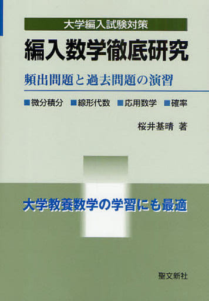
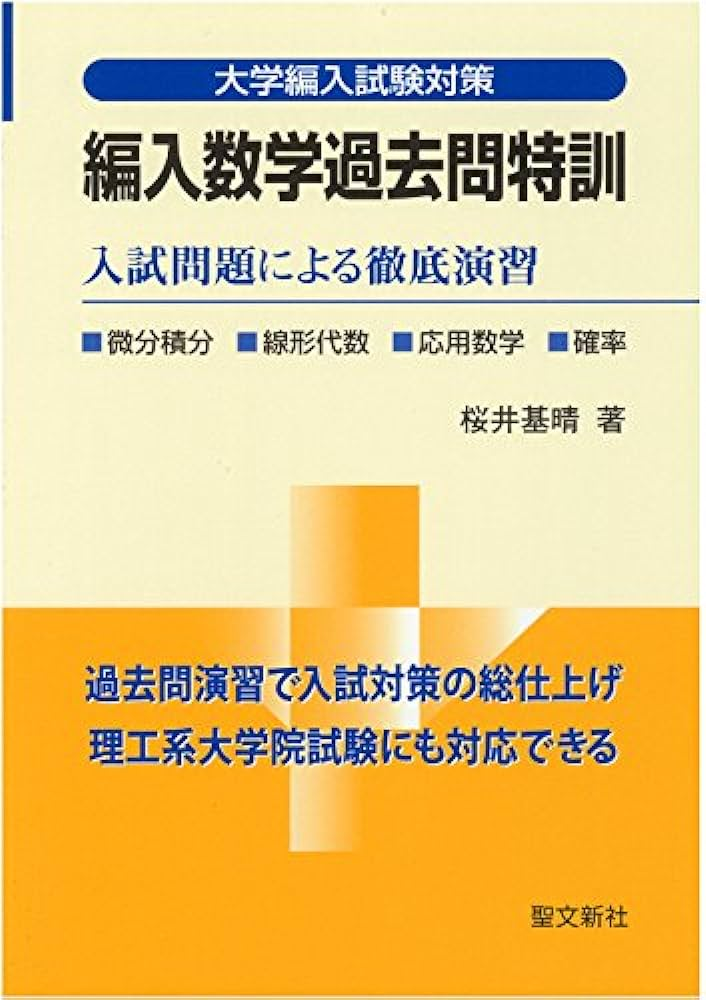

この度は福井大学工学部機械システム工学科機械システムコース編入についてのホームページにお越しいただき、ありがとうございます。
このサイトでは福井大学工学部機械システム工学科の編入のために役立った参考書や、情報などを載せています。受験生の皆さんは是非参考にしてください。まず経歴としては、農学部から福井大学工学部機械システム工学科機械システムコースに編入をしました。編入に当たった経緯としては、工学部の学ぶ内容に興味を持ったという単純な動機です。
福井大学の機械システム工学科の試験科目は数学のみで、大学の初めにならう線形代数と微分積分と常微分方程式、確率統計、フーリエ解析、ラプラス変換からの出題です。微分積分(テイラー展開、マクローリン展開、微分方程式、重積分、全微分、双曲線関数の微分積分)
線形代数(逆行列、行列の因数分解）は特に頻出頻度が高いです。
勉強内容は過去問対策(20年間分)を主に行い、大学編入で使われている下記の参考書を使って勉強を行っていました

使った参考書1つ目は、編入数学徹底研究です。この参考書は初歩的な編入数学を解くことができます。大学編入を目指し、何から勉強していこうかなと悩んだら、
ぜひこの参考書から勉強をしてほしい参考書です。私は初学だったため1min
さんの動画を見て例題を解いていました。章末問題は例題が終わったら解き方の確認のため行っていました。
福井大学では初歩的な微分方程式の問題が300点中100点ほど出てきます。この参考書で微分方程式対策すれば必ず得点源にすることができるので解法暗記をおすすめします。

使った参考書2つ目は、編入数学過去問特訓です。この参考書では編入数学徹底研究より難易度が高いものとなっており、志望大学の過去問の答えを探す辞書的な役割を持つことができます。
実際自分は分からない問題があった際に、解法を探すためにこの参考書を使っていました。微分方程式と重積分の分野は重点的に行っていました。
使った参考書3つ目は、編入数学徹底演習です。この参考書は難易度が高く、あまり問題演習を行っていません。やった範囲は微分方程式と重積分のみでした。
他学部からの編入は無理と思っている方もいるかもしれませんが、実際試験を解ければいいので勉強すれば編入することができると思います。入ってからは単位認定の関係で留年するかもしれませんが...。
©Copyright Nobu. All rights reserved.